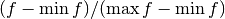
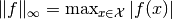

Gambles & Rays¶
Gambles¶
- class murasyp.gambles.Gamble(data)[source]¶
Gambles map states to utility payoffs
This class derives from Vector, so its methods apply here as well.
What has changed:
There is a new constructor. If data is a Set, then its so-called indicator function is generated.
>>> Gamble(set('abc')) Gamble({'a': 1, 'c': 1, 'b': 1})
Pointwise multiplication and scalar addition & subtraction have been added.
>>> f = Gamble({'a': 1.1, 'b': '-1/2','c': 0}) >>> g = Gamble({'b': '.6', 'c': -2, 'd': 0.0}) >>> f * g Gamble({'a': 0, 'c': 0, 'b': '-3/10', 'd': 0}) >>> -3 - f Gamble({'a': '-41/10', 'c': -3, 'b': '-5/2'})
A gamble’s domain can be cylindrically extended to the cartesian product of its domain and a specified Set.
>>> Gamble({'a': 0, 'b': -1}) ^ {'c', 'd'} Gamble({('b', 'c'): -1, ('a', 'd'): 0, ('a', 'c'): 0, ('b', 'd'): -1})
- bounds()[source]¶
The minimum and maximum values of the gamble
returns: the minimum and maximum values of the gamble rtype: a pair (tuple) of Fraction >>> Gamble({'a': 1, 'b': 3, 'c': 4}).bounds() (Fraction(1, 1), Fraction(4, 1))
- scaled_shifted()[source]¶
Shifted and scaled version of the gamble
returns: a scaled and shifted version  of the gamble 
rtype: Gamble >>> Gamble({'a': 1, 'b': 3, 'c': 4}).scaled_shifted() Gamble({'a': 0, 'c': 1, 'b': '2/3'})
Note
The zero gamble is returned in case the gamble is constant.
- norm()[source]¶
The max-norm of the gamble
returns: the max-norm  of the gamble rtype: Fraction >>> Gamble({'a': 1, 'b': 3, 'c': 4}).norm() Fraction(4, 1)
- normalized()[source]¶
Max-norm normalized version of the gamble
returns: a normalized version  of the gamble
of the gamble
rtype: Gamble >>> Gamble({'a': 1, 'b': 3, 'c': 4}).normalized() Gamble({'a': '1/4', 'c': 1, 'b': '3/4'}) >>> Gamble({'a': 0}).normalized() == None True
Note
None is returned in case the the gamble’s norm is zero.
Rays¶
- class murasyp.gambles.Ray(data)[source]¶
Rays are directions in gamble space, i.e., normalized gambles
This class derives from Gamble, so its methods apply here as well.
What has changed:
Its max-norm is one and its domain coincides with its support.
>>> Ray({'a': 5, 'b': -1, 'c': 0}) Ray({'a': 1, 'b': '-1/5'}) >>> Ray({'a': 0}) Traceback (most recent call last): ... ValueError: no Ray can be constructed from the identically zero Mapping {'a': 0}
Ray-arithmetic results in gambles (which can be converted to rays).
>>> r = Ray({'a': 1,'b': -2}) >>> r / 2 Gamble({'a': '1/4', 'b': '-1/2'}) >>> Ray(r * r) Ray({'a': '1/4', 'b': 1})